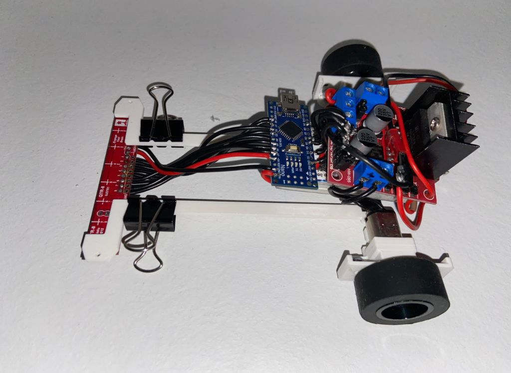

Line Follower Robot

The Line Follower is a basic autonomous robot that follows a predefined black line path on a white surface using a sensor array.
It is programmed with PID logic for stability and precision during turns and curves. This robot is often used in race or maze-solving competitions,
providing the foundation for advanced autonomous robotics.
Technologies Used
- 🧠Controller: Arduino UNO
- 👀 Sensors: IR Sensor Array (typically 3–5 channel)
- ⚙️ Logic: PID control algorithm for smooth navigation
- 🔋 Power: 9V or 11.1V battery with regulator
- 🛠Chassis: Lightweight and center-balanced for better turns
GitHub Repository
View on GitHub
Project Report
Gallery
← Back to Projects